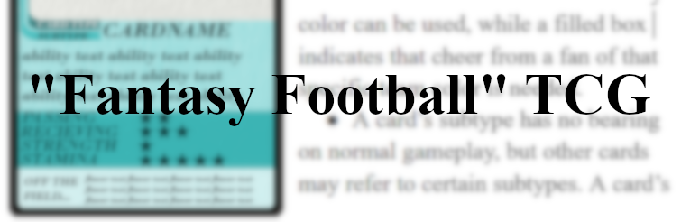
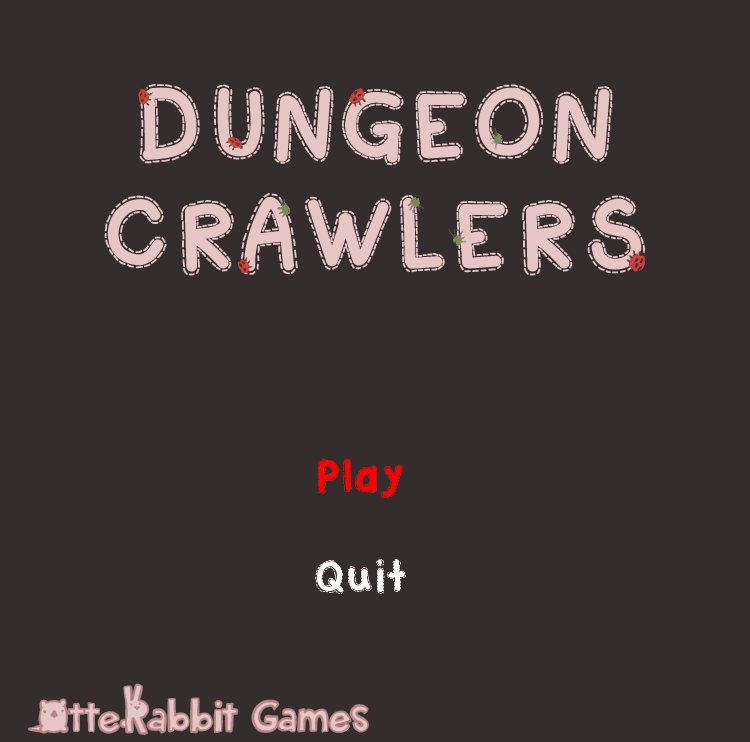

About Me
I'm a 18 year old game developer and designer. I'm feedback driven with a commitment to user experience, and I have a passion for mechanical design.
Links
Other places you can find me.
Original Works
"Fantasy Football" Trading Card Game
An original card game I created based on the idea of "Sports trading cards crossed with Trading Card Games", with a fantastical twist.
Read the design document here.
Or watch playtests of the game in action:
Frogger GML Port
A port of the classic arcade game Frogger to GML. Created in collaboration with Aiden Pearson. You can play it right in your browser above!
Or, download it on Github here.
"Dungeon Crawlers"
A simple dungeon crawler with producerally generated floors. Created in GML with Shea Hardy.
Download it on Github here.
ApPoint (Graphic Design Example)

A graphic design example based on the idea of a smartphone app for scheduling online medical appointments.
Site last updated 12/3/21